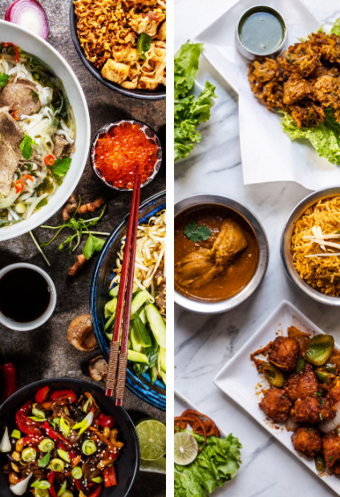

ผู้ที่ออกกำลังกายเพื่อสร้างกล้ามเนื้อ
การรับประทานโปรตีนจะต้องเพิ่มขึ้น การคำนวณปริมาณโปรตีนที่เหมาะสำหรับการสร้างกล้ามเนื้อคือ ประมาณ 2-3 กรัมต่อน้ำหนักตัว 1 กิโลกรัม เช่น น้ำหนักตัวคุณคือ 65 กิโลกรัม คุณจะต้องบริโภคโปรตีนประมาณ 120 กรัมต่อวัน
สำหรับนักเพาะกาย
การสร้างกล้ามเนื้อจำเป็นต้องแบ่งอาหารอย่างเหมาะสมเป็นมื้อย่อย 6-8 มื้อต่อวัน นอกจากนี้ ควรรับประทานโปรตีนทุก 2-3 ชั่วโมง ประมาณ 30-50 กรัมต่อครั้ง โดยขึ้นอยู่กับน้ำหนักตัวของคุณ การแบ่งอาหารอย่างนี้จะช่วยให้ร่างกายมีโปรตีนที่เพียงพอตลอดวัน ช่วยในกระบวนการซ่อมแซมและสร้างกล้ามเนื้อได้อย่างมีประสิทธิภาพมากยิ่งขึ้น
